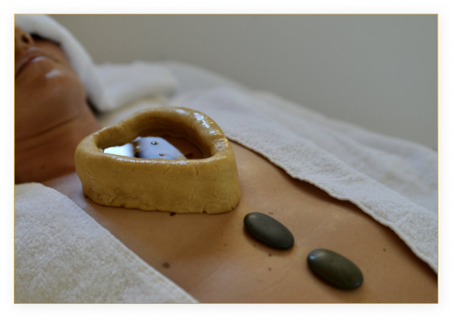
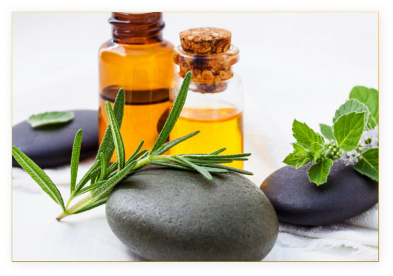

"Uro" means "chest," and "vasthy" means "pool." This is the pooling of medicated oil or other medicinal liquids over the chest. This treatment strengthens the lung tissues and the heart and is helpful for asthma, chronic bronchitis, and certain heart conditions. The patient will lie in a supine position, and the therapist will make a dam on the chest using a special dough. After fixing the dough, medicine at the desired temperature is poured and held for around 30 to 45 minutes.
The healing property of the medicated oil would help the muscle and other connectivity tissue to stay active and increase the blood flow in the body. The oil that is poured inside the area made by the herbal paste is recycled periodically in order to keep it warm as this would enrich the blood and help the muscle to get stronger. The therapy is very much effective for the chain smokers, who face the problem of cardiomyopathy and respiratory disorder.